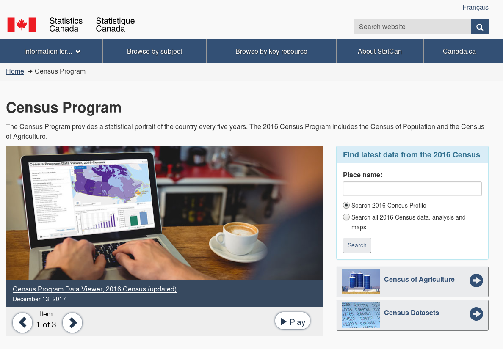

Canadian Census of Population

http://www.census.gc.ca
- "A statistical portrait of the country"
- Every 5 years (quinquennial!)
- Most recently in 2016
- 100% of households surveyed:
- 75% short-form survey
- 25% long-form survey
Short form data
- date of birth and age
- sex
- relationships of household members
- knowledge of official languages
- language spoken most often
- other language spoken regularly
- first language learned
Long form data
- Everything from the short form, plus:
- activities of daily living
- sociocultural information
- mobility
- place of birth
- education
- labour market activities
- housing
Income data
- Drawn from 2015 personal income tax and benefits information
- Way more accurate than self-reported income
Data granularity
Aggregated by geographic area: country, province,
- census divisions (CD) - groups of municipalities
- census subdivisions (CSD) - municipality
- census metropolitan areas (CMA) - 100,000+
- census agglomeration areas (CA) - 10,000+
- dissemination areas (DA) - 400 - 700
Hands-on with the Census
Exercise: investigate the demographics of the area surrounding McGill University
That's in Montréal.
Québec.
GeoSearch
- Drill down to DA level - note the names!
- Click a DA for high level details (population, dwellings, area)
- Scroll down to Results and click 2016 Census Profile
- It's a wonderland of data!
Filtering data
- Default view of All data is… a lot
- Select a view lets you filter to just one category of data
Comparing geographies
- Your selection is compared against Canada by default
- Change geography lets you compare to province or other census dissemination area (CD, CSD, CMA, DA…
-
Download the data
- CSV is available for the compared geographies…
- Or all DAs in a given province (these files are huge and need special processing)